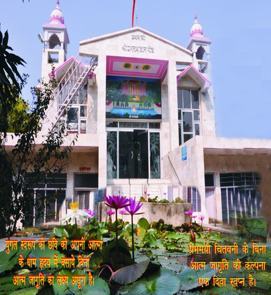

संस्थापक
संक्षिप्त परिचय
श्री राजन स्वामी जी का जन्म सन् १९६६ में बलिया जिले के ग्राम
सीसोटार में हुआ था ।
आपकी माताजी का स्वभाव अत्यन्त स्नेहमयी व आध्यात्मिक है तथा आपके पिताजी ने सदा ही
निर्धनों के अधिकारों की रक्षा व सामाजिक कल्याण के लिए उदारतापूर्वक अपनी सम्पत्ति
व्यय की ।
श्री राजन स्वामी बाल्यकाल से ही परिश्रमी, अध्ययनशील, सौम्य, मृदु भाषी, तथा
तीक्ष्ण बुद्धि के धनी रहे हैं । विद्यार्थी जीवन में आप सदा कक्षा मे अव्वल रहते थे
तथा समय बचाकर आप अगली कक्षा की पुस्तकें भी पढ़ लिया करते थे । संस्कृत भाषा में सदा
से आपकी विशेष रुचि रही है ।
पूर्व संस्कारों,यदा-कदा मिले सत्संग, तथा आध्यात्मिक ग्रन्थों से मिले
दिशानिर्देशानुसार आपने पहले मन्त्र जाप, तद्पश्चात ध्यान साधना प्रारम्भ कर दी ।
वर्ष १४ की छोटी सी आयु में आप प्रतिदिन घर पर ४-५
घण्टे की नियमित साधना करने लगे । कठोर
साधनामयी दिनचर्या व सदा परमात्मा चिन्तन में डूबे रहने के कारण आपका मन सांसारिक
गतिविधियों से विरक्त रहने लगा ।
स्वामी जी ने १८ वर्ष की अल्पायु में गृह त्याग कर
सन्यास ग्रहण कर लिया । तद्पश्चात आप
कभी अपने घर वापस नहीं गए । साधन के रूप में धन, वस्त्र, व भोजन सामग्री न ले जाकर , आप
अपने साथ वेदों की प्रतिलिपि लेकर चले । हिमालय व उत्तर भारत के विभिन्न प्रान्तों की
यात्रा करते हुए आप एकान्तवास में अपनी आत्मक्षुधा को तृप्त करने में लीन रहे । आपने
योग की दीक्षा लेकर योगाभ्यास किया तथा वेदादि आर्ष ग्रन्थों का अध्ययन भी किया ।
साधनाकाल में आपने कभी भी लेट कर शयन नहीं किया, अपितु ध्यान में बैठे-बैठे ही रात्रि
बितायी।

Shri Prannath Jyanpeeth.Nakud Road, Sarsawa Saharanpur, U.P. 247232 India
संयोगवश २० वर्ष की आयु मे आप श्री निजानन्द आश्रम के
महान धर्मोपदेशक, धर्मवीर सरकार
श्री जगदीश चन्द्र जी महाराज, के सम्पर्क में आए और श्री प्राणनाथ जी की अमृतमयी अखण्ड
वाणी का ज्ञान पाकर आपको अत्यन्त मानसिक शान्ति प्राप्त हुई । आप श्री निजानन्द आश्रम,
रतनपुरी में सरकार श्री के सान्निध्य में रहकर ज्ञानार्जन करने लगे । आपने श्री
प्राणनाथ जी की वाणी एवं बीतक साहेब के साथ-साथ अन्य सभी धर्मग्रन्थों का भी गहन अध्ययन
व मन्थन किया । परमहंस महाराज श्री रामरतन जी के जीवन का आप पर गहरा प्रभाव पड़ा । आपने
आश्रम में प्रवास के दौरान १५ वर्षों तक सतत् साहित्य की सेवा की और अनेक ग्रन्थों की
रचना व हिन्दी अनुवाद करके अपने सदगुरु के चरणों में प्रकाशन हेतु समर्पित कर दिया
।आपका प्रथम ग्रन्थ सत्यांजलि है, जो वेद शास्त्रों की साक्षियों से श्री निजानन्द
सम्प्रदाय के सिद्धान्तों की पुष्टि करता है।
सरकार श्री के धामगमन के पश्चात् आपने श्री प्राणनाथ जी द्वारा स्थापित मुक्तिपीठ पन्ना
(मध्य प्रदेश) की पुण्य स्थली चोपड़ा जी मन्दिर के निर्जन
स्थान पर ५ वर्षों तक कठोर
साधना की । तद्पश्चात अक्षरातीत श्री प्राणनाथ जी व सदगुरु महाराज जी की
अन्तःप्रेरणा
से आपने २००५ में सरसावा में श्री प्राणनाथ ज्ञानपीठ की
स्थापना की । इस संस्था के
माध्यम से आप समाज में ब्रह्मज्ञान व शिक्षा का प्रचार करने में तल्लीन हैं तथा अपना
शेष जीवन इसी महान उद्देश्य के लिए समर्पित कर दिया है ।
सप्रेम प्रणाम जी !
सद्गुरु & परमहंस संक्षिप्त परिचय पढ़ने के लिए और समय निकालने के लिए धन्यवाद.
मैं आपसे अनुरोध करता हूं कि आप मुझे अपनी ईमानदार प्रतिक्रिया दें।